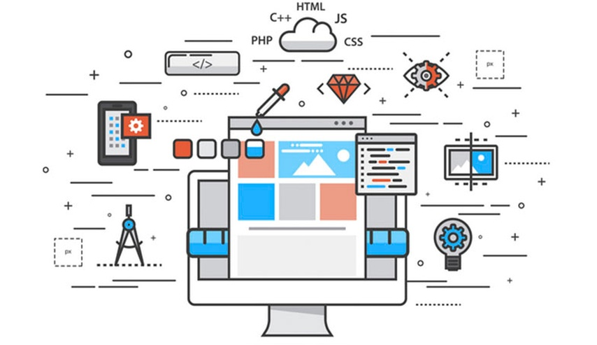

El desarrollo web significa construir y mantener un sitio web; este trabajo se realiza en segundo plano, puede hacer que el sitio web tenga una apariencia perfecta, un funcionamiento rápido y un buen rendimiento para brindar la mejor experiencia de usuario, los desarrolladores web son como duendes capaces: nunca los verás, pero son ellos quienes hacen que todo funcione de manera correcta, rápida y eficiente. Los conocimientos y habilidades relacionados con el desarrollo web son los más necesarios y los más gratificantes.Los desarrolladores web lo hacen a través de diversos lenguajes de programación donde su entorno es hacia el publico en general.
El lenguaje que usan en cada momento depende del tipo de tarea que están haciendo. El desarrollo web se divide, de forma general, en Frontend (la parte cliente) y Backend (la parte servidor). Por desarrollo web entendemos que todas las disciplinas involucradas en la creación de sitios web, o aplicaciones que se ejecutan en la web(internet) y a las que se accede mediante el navegador otro termino que se podría aplicar es que el desarrollo web es un término que define la creación directa de sitios web desde la Web, Internet y/o Intranet.